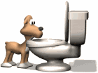

About Pawbs Engine Pawbs Engine is a basic first-person shooter game engine built on three.js, an easy-to-use JavaScript library that provides a simple interface through which to make use of the WebGL API. This engine also utilizes Tauri to quickly perform cross-platform compilation of application binaries from the game files. 
Website Neocities Website GitHub Pawbs Engine GitHub Neocities Website GitHub Social Media WolfPup's Bluesky ServingTuna's Bluesky